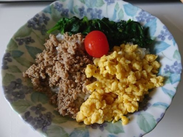

私はNBAを見ることが好きです。
NBAとはアメリカとカナダに跨るプロバスケットボールリーグです。
このリーグは世界最高峰と言われており、30チームが優勝を目指して競い合います。
本格的に見るようになったのは、大学生になってからです。
中学時代はバスケ部に所属しておりました。
高校生になってから、友達の母親からバスケのコーチをしないか？と誘われ
女子ミニバスケットボール（小学生）のコーチをやっていました。
大学生になってから、バスケをプレイするのではなく、見るようになりました。
シーズン中は、ほぼ毎日試合が行われています。
時差がありますので、日本時間では朝9時から昼の3時ぐらいに試合が行われています。
社会人となってからは、その時間は働いているので見られなくなりましたが
（今年はコロナの影響で、リーグ自体が中断しています。）
仕事が終わったら、楽しみの１つとして見られたら良いなと思います。
一般的な面白さは、やはり同じ人間なのに、こんなことが出来るのか・・・
というのを見ることかもしれません。
バスケットボールをやっていた人は、自分では出来ないけど、一流になれば
こんなことも出来るのかと楽しんでいるかと思います。
始めてバスケットボールを見る人は、試合の迫力、熱量を感じ取ってもらったり、
カッコいい選手のカッコいいプレイを見て興奮してもらいたいです。
楽しめる方法としては、バスケットボールに詳しい人と一緒に見て、
解説をしてもらうことかと思います。
今のプレイは、こういう過程があって、その結果、ゴールになったなどを
教えてもらうと、奥の深さを感じられるかもしれません。
私が考えるNBAの面白いところは、
チームが選手に使えるお金（サラリー）が決まっていることです。
身体能力の凄さ、試合展開の速さ、点が多く入るなども面白さの１つです。
しかし日本のプロスポーツと大きく違うところが、サラリーに上限（キャップ）があるため、
お金を多く持っている ＝ 強いチームとはならないところです。
サッカーや野球を見てみると、浦和や巨人は他チームに比べて、お金を持っているチームだと思います。
そのため契約交渉の場では強いと思います。良い選手ばかり集めただけで優勝できるほど簡単な世界ではないですが、
優勝には近づくと思います。
NBAでは、チーム間の金銭面での差異をなくすために、サラリーキャップを導入しました。
これにより、大都市のチームが金銭で良い選手を大量に獲得するのを防いでいます。
（依然として、大都市のほうが環境が良いため、それを目的で行く選手はいますが・・・）
チームは、どの選手にお金を出して契約するのかをよく考えなければいけません。
その年に契約した内容が、ひどいと数年後まで影響が出るからです。
そこの駆け引きを見るのも楽しさの１つだと私は思います。
私は料理をすることが好きです。
高校生のときから、カレーなどを作ることはしていました。
大学生から一人暮らしを始め、自炊をするようになってからは
料理が楽しくて仕方ありませんでした。
なぜ私は料理が好きなのかを考えてみました。
理由は、料理をしていると頭を空っぽに出来てるからなのではないかと思いました。
考え事や悩みなどを一瞬でも忘れるときが必要だと思いますが、
私の場合は料理なのだと気づきました。
